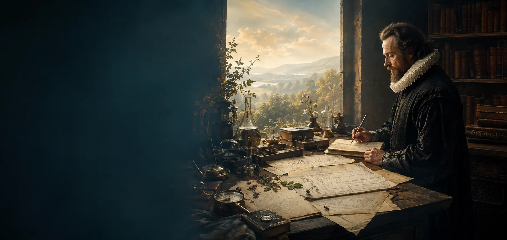

Filosofia moderna · Il laboratorio del sapere
Liberare la mente.
Interrogare la natura.
La conoscenza comincia quando smettiamo di costringere il mondo a confermare ciò che pensiamo.
Tocca i tre segni nella scena
Quattro ingressi
Non leggere soltanto Bacone: metti in moto il suo metodo.
Scopro
Una notizia ambigua, quattro decisioni e una mente che crede di essere neutrale.
PercorsoStudio
Dodici tappe a due livelli, dalle fratture della modernità alla responsabilità del sapere.
TestiApprofondisco
Fonti primarie, interpretazioni accademiche e questioni aperte restano distinguibili.
Biografia visualeA fumetti
Otto scene dalla formazione alla caduta politica, fino alla Nuova Atlantide.
Scopro · Prima vivi il problema
La notizia che volevi fosse vera
Ti arriva un messaggio sorprendente. Non devi indovinare l’opzione “buona”: devi osservare come lavora la tua mente.
Studio · Dodici tappe
Dalla mente ingombra alla conoscenza operativa
Spiegazioni chiare, esempi concreti e domande per entrare nel problema.
Il progresso resta sul dispositivo. Non misura il tuo valore: serve solo a ritrovare il filo.
Laboratorio · Interpretare la natura
Il calore davanti al tribunale dell’esperienza
Classifica i casi, escludi le spiegazioni incompatibili e formula una prima vendemmia. L’esperimento non conferma un’intuizione: la mette in pericolo.
Approfondisco · Testi e interpretazioni
La voce di Bacone, il lavoro degli studiosi
Ogni scheda dichiara il proprio livello: fonte primaria, ricostruzione o problema storiografico.
A fumetti · Otto scene
Una vita tra corte, caduta e rifondazione del sapere
La biografia non spiega automaticamente la filosofia, ma mostra il mondo nel quale una grande ambizione intellettuale prese forma.
Mappe concettuali
Segui il movimento, non una lista di definizioni
Strumenti
Ritrova, confronta, verifica
La domanda che resta
Se conoscere significa poter trasformare il mondo, chi deve decidere in quale mondo trasformarlo?
Bacone consegna alla modernità una promessa e un rischio. Il metodo disciplina la mente e moltiplica le possibilità dell’agire; proprio per questo, la potenza del sapere non può sottrarsi alla responsabilità.